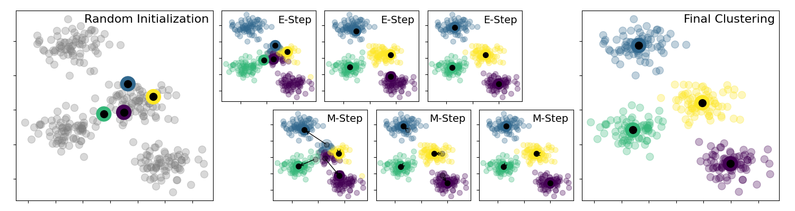

k-means Clustering
We study a fundamental clustering problem in unsupervised learning, k-means clustering. We will begin by discussing the problem formulation and then learn how to write a parallel k-means algorithm.
Problem Formulation
k-means clustering uses centroids, k different randomly-initiated points in the data, and assigns every data point to the nearest centroid. After every point has been assigned, the centroid is moved to the average of all of the points assigned to it. We describe the k-means algorithm in the following steps:
- Step 1: initialize k random centroids
- Step 2: for every data point, find the nearest centroid (L2 distance or other measurements) and assign the point to it
- Step 3: for every centroid, move the centroid to the average of the points assigned to that centroid
- Step 4: go to Step 2 until converged (no more changes in the last few iterations) or maximum iterations reached
The algorithm is illustrated as follows:
A sequential implementation of k-means is described as follows:
// sequential implementation of k-means on a CPU // N: number of points // K: number of clusters // M: number of iterations // px/py: 2D point vector void kmeans_seq( int N, int K, int M, const std::vector<float>& px, const std::vector<float>& py ) { std::vector<int> c(K); std::vector<float> sx(K), sy(K), mx(K), my(K); // initial centroids std::copy_n(px.begin(), K, mx.begin()); std::copy_n(py.begin(), K, my.begin()); // k-means iteration for(int m=0; m<M; m++) { // clear the storage std::fill_n(sx.begin(), K, 0.0f); std::fill_n(sy.begin(), K, 0.0f); std::fill_n(c.begin(), K, 0); // find the best k (cluster id) for each point for(int i=0; i<N; ++i) { float x = px[i]; float y = py[i]; float best_d = std::numeric_limits<float>::max(); int best_k = 0; for (int k = 0; k < K; ++k) { const float d = L2(x, y, mx[k], my[k]); if (d < best_d) { best_d = d; best_k = k; } } sx[best_k] += x; sy[best_k] += y; c [best_k] += 1; } // update the centroid for(int k=0; k<K; k++) { const int count = max(1, c[k]); // turn 0/0 to 0/1 mx[k] = sx[k] / count; my[k] = sy[k] / count; } } // print the k centroids found for(int k=0; k<K; ++k) { std::cout << "centroid " << k << ": " << std::setw(10) << mx[k] << ' ' << std::setw(10) << my[k] << '\n'; } }
Parallel k-means using CPUs
The second step of k-means algorithm, assigning every point to the nearest centroid, is highly parallelizable across individual points. We can create a parallel-for task to run parallel iterations.
std::vector<int> best_ks(N); // nearest centroid of each point unsigned P = 12; // 12 partitioned tasks // update cluster taskflow.for_each_index(0, N, 1, [&](int i){ float x = px[i]; float y = py[i]; float best_d = std::numeric_limits<float>::max(); int best_k = 0; for (int k = 0; k < K; ++k) { const float d = L2(x, y, mx[k], my[k]); if (d < best_d) { best_d = d; best_k = k; } } best_ks[i] = best_k; });
The third step of moving every centroid to the average of points is also parallelizable across individual centroids. However, since k is typically not large, one task of doing this update is sufficient.
taskflow.emplace([&](){ // sum of points for(int i=0; i<N; i++) { sx[best_ks[i]] += px[i]; sy[best_ks[i]] += py[i]; c [best_ks[i]] += 1; } // average of points for(int k=0; k<K; ++k) { auto count = max(1, c[k]); // turn 0/0 to 0/1 mx[k] = sx[k] / count; my[k] = sy[k] / count; } });
To describe M iterations, we create a condition task that loops the second step of the algorithm by M times. The return value of zero goes to the first successor which we will connect to the task of the second step later; otherwise, k-means completes.
taskflow.emplace([m=0, M]() mutable { return (m++ < M) ? 0 : 1; });
The entire code of CPU-parallel k-means is shown below. Here we use an additional storage, best_ks, to record the nearest centroid of a point at an iteration.
// N: number of points // K: number of clusters // M: number of iterations // px/py: 2D point vector void kmeans_par( int N, int K, int M, cconst std::vector<float>& px, const std::vector<float>& py ) { unsigned P = 12; // 12 partitions of the parallel-for graph tf::Executor executor; tf::Taskflow taskflow("K-Means"); std::vector<int> c(K), best_ks(N); std::vector<float> sx(K), sy(K), mx(K), my(K); // initial centroids tf::Task init = taskflow.emplace([&](){ for(int i=0; i<K; ++i) { mx[i] = px[i]; my[i] = py[i]; } }).name("init"); // clear the storage tf::Task clean_up = taskflow.emplace([&](){ for(int k=0; k<K; ++k) { sx[k] = 0.0f; sy[k] = 0.0f; c [k] = 0; } }).name("clean_up"); // update cluster tf::Task pf = taskflow.for_each_index(0, N, 1, [&](int i){ float x = px[i]; float y = py[i]; float best_d = std::numeric_limits<float>::max(); int best_k = 0; for (int k = 0; k < K; ++k) { const float d = L2(x, y, mx[k], my[k]); if (d < best_d) { best_d = d; best_k = k; } } best_ks[i] = best_k; }).name("parallel-for"); tf::Task update_cluster = taskflow.emplace([&](){ for(int i=0; i<N; i++) { sx[best_ks[i]] += px[i]; sy[best_ks[i]] += py[i]; c [best_ks[i]] += 1; } for(int k=0; k<K; ++k) { auto count = max(1, c[k]); // turn 0/0 to 0/1 mx[k] = sx[k] / count; my[k] = sy[k] / count; } }).name("update_cluster"); // convergence check tf::Task condition = taskflow.emplace([m=0, M]() mutable { return (m++ < M) ? 0 : 1; }).name("converged?"); init.precede(clean_up); clean_up.precede(pf); pf.precede(update_cluster); condition.precede(clean_up) .succeed(update_cluster); executor.run(taskflow).wait(); }
The taskflow consists of two parts, a clean_up task and a parallel-for graph. The former cleans up the storage sx, sy, and c that are used to average points for new centroids, and the later parallelizes the searching for nearest centroids across individual points using 12 tasks (may vary depending on the machine). If the iteration count is smaller than M, the condition task returns 0 to let the execution path go back to clean_up. Otherwise, it returns 1 to stop (i.e., no successor tasks at index 1). The taskflow graph is illustrated below:
The scheduler starts with init, moves on to clean_up, and then enters the parallel-for task parallel-for that spawns a subflow of 12 workers to perform parallel iterations. When parallel-for completes, it updates the cluster centroids and checks if they have converged through a condition task. If not, the condition task informs the scheduler to go back to clean_up and then parallel-for; otherwise, it returns a nominal index to stop the scheduler.
Benchmarking
Based on the discussion above, we compare the runtime of computing various k-means problem sizes between a sequential CPU and parallel CPUs on a machine of 12 Intel i7-8700 CPUs at 3.2 GHz.
| N | K | M | CPU Sequential | CPU Parallel |
|---|---|---|---|---|
| 10 | 5 | 10 | 0.14 ms | 77 ms |
| 100 | 10 | 100 | 0.56 ms | 86 ms |
| 1000 | 10 | 1000 | 10 ms | 98 ms |
| 10000 | 10 | 10000 | 1006 ms | 713 ms |
| 100000 | 10 | 100000 | 102483 ms | 49966 ms |
When the number of points is larger than 10K, the parallel CPU implementation starts to outperform the sequential CPU implementation.